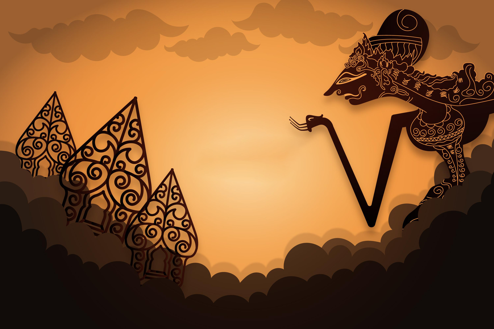

Sejarah
Wayang diyakini berasal dari Indonesia, meskipun variasi seni pertunjukan serupa dapat ditemukan di beberapa negara Asia Tenggara, seperti Thailand (Nang Yai), Kamboja (Sbaek Thom), dan Malaysia (Wayang Kulit). Ada juga teori yang menyebutkan bahwa wayang dapat memiliki pengaruh dari teater boneka India dan Tiongkok.
Jenis wayang yang paling terkenal di Indonesia adalah "Wayang Kulit" atau "Wayang Purwa." Wayang Purwa menggunakan boneka kulit yang diproyeksikan ke layar putih menggunakan sumber cahaya tradisional seperti lilin atau lampu minyak. Pertunjukan Wayang Kulit sering kali berlangsung semalaman dan menceritakan cerita-cerita epik seperti Ramayana dan Mahabharata . . .
Selain Wayang Kulit, ada berbagai jenis wayang lainnya di Indonesia, termasuk Wayang Golek (boneka tiga dimensi dari kayu), Wayang Topeng (pertunjukan topeng), dan Wayang Beber (pementasan gambar- gambar yang digulung).
Wayang tidak hanya menjadi hiburan, tetapi juga memiliki peran budaya yang penting. Pertunjukan wayang sering digunakan untuk menyampaikan pesan moral, mitologi, dan sejarah. Mereka juga digunakan dalam ritual keagamaan seperti upacara pengantin, khitanan (sunat), dan upacara kematian.
elama masa penjajahan Belanda di Indonesia, seni wayang tetap bertahan dan terus berkembang. Pada zaman modern, wayang juga telah beradaptasi dengan teknologi, seperti proyektor modern yang digunakan untuk pertunjukan Wayang Kulit.
Pada tahun 2003, UNESCO mengakui Wayang Kulit sebagai Warisan Budaya Tak Benda Manusia yang Penting, mengakui nilai sejarah, budaya, dan artistiknya yang mendalam.